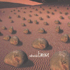
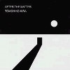

strange music page
japanese strange music * * * zabadak
|
#ザバダックです。高校の頃は死ぬほど聞いてました。大学のころはコピーもしました。現在は吉良知彦さん一人のプロジェクトになっていますが、昔は上野洋子さんとのデュオでした(さらに昔はトリオだったようです)。最近はあんまり聴かなくなってしまったので最近の音は良く知らないのですが、初期の頃の浮遊感のある曲が好きです。不思議な世界観を持ったグループだなーとか思ってました。
|
- zabadak (1986-1987)
- zabadak (1989-1994)
- zabadak (1995-)
- 吉良知彦
- 上野洋子
- Vita Nova
|
#1st.と2nd.のカップリングCD、現在廃盤の"WATER GARDEN"とは曲順違いになっています。独特の無機質で浮遊感のある雰囲気を持ってますが次作以降少しずつ指向を変化させていきます。後々ライヴでも良く演奏される曲も多く収録されています。１曲目４曲目９曲目など強く印象に残る曲が多いです。
-zabadak-I-
- わにのゆめ (crocodile dreamer)
- 森林学者 (forester)
- パスカルの群れ (the vapour)
- Poland
- オハイオ殺人事件 (the murder case in ohio)
-銀の三角 (crescent moon)-
- 水のソルティレージュ (shouldn't have to be like that)
- 風の丘 (windy hill)
- HIND IN THE BUSH
- ガラスの森 (grass forest)
- 夜の彷徨 (mermaid)
- チグリスとユーフラテスの岸辺 (visions of tigris)
- 吉良知彦 (guitars,bass,keyboards,vocals)
- 上野洋子 (vocals,piano,programming)
- 松田克士 (drums,percussion,lyrics)
- 阿部孝夫 (bass)
- 辻信雄 (synthesizer programming)
- 坂元俊介 (synthesizer programmng)
- kamata miwa (recorder)
- Cliford Gibson (newscaster voice)
チャカ (backing vocals)
- 濱田理恵 (backing vocals)
- 小峰公子 (backing vocals)
東芝EMI: TOCT-6003 (1990)
#初のフルアルバムです、初期の路線を詰めていった感じですね。とっても完成度の高い音ですが、ドライな雰囲気が好き嫌いを分けるかも。CMに使われていた曲とかも収録されています。
synthesizer manupilateの大山曜さんはプログレ系の
Asturiasの方です、この時期の音と結構通じる者があるかも。
- Blanche
- La fate
- Seraphita
- La ronde
- Unreasonable egg
- 月 (Luna)
- 蝶 (zephilus)
- 水のルネス (water garden)
- 街角 (avenue)
- Easy going
- 朝 (in the early morning)
- 明日からの風 (fairy dreams)
- 吉良知彦 (guitars,bass,vocals,keyboards)
- 上野洋子 (vocals,keyboards,piano)
- 内田ken健太郎 (bass)
- 宮田繁男 (drums)
- Yutaka Odawara (drums)
- 近藤正明 (guitars)
- Fumio Takeyama (percussion)
- 濱田理恵 (Darie) (backing vocal)
- 坂元俊介 (programming)
- 大山曜 (synthesizer manupilating)
- 辻信雄 (programming)
東芝EMI: CT32-5024 (1987)
#移籍後の初のアルバム、この頃からアコースティック色が強くなってきて、楽曲の中での声の重要さが増して来てると思います。深くリバーブが掛かってちょっと靄がかったイメージ、バンドとしては過渡期にあたるのかもしれないです。
アルバム全体のイメージからするとちょっと外れてますけど、"THERE'S A VISION"って曲はなんとなく気に入ってます。
- FOLLOW YOUR DREAMS
- 飛行夢 (flying over dream)
- 砂煙のまち (a town of dusty clouds)
- I AM...
- THERE'S A VISION
- GOOD BYE EARTH
- 街角・影法師 (a street corner,a long shadow)
- 人形たちの永い午睡 (a long nap of dolls)
- WALKING TOUR
- LET THERE BE LIGHT
- 吉良知彦 (guitars,bass,vocals,keyboards)
- 上野洋子 (vocals,keyboards)
- 坂上真清 (Irish harp on 4.)
- 安井敬 (recorder on 7.)
- 今井裕 (saxes on 6.)
- 内田ken太郎 (bass on 2.)
- 宮田繁男 (drums on 3.5.8.)
ALFA/MOON RECORDS: 32XM-97 (1989.11.1)
#で、"ZABADAK"の一般的なイメージを作るようになったアルバムです。アコースティックな路線を更に推し進めて、絶妙のバランスですね。"遠い音楽"や"harvest rain"など印象深い曲が沢山収録されています。
初めて聴いたのは、"harvest rain"のシングルがリリースされた頃で(なんか夜中の番組でクリップがほんの少し流れてて)そのシングルや前作で感じられた靄から抜け出てきたイメージを持ってます。
- 満ち潮の夜
- 夢を見る方法
- 遠い音楽
- 二月の丘
- 愛は静かな場所へ降りてくる
- 生まれた街へ
- Sarah
- Around the secrets
- とぎれとぎれのSilent night
- harvest rain（豊穣の雨）
- 吉良知彦 (vocals,guitars,bass,keyboards,mandolin)
- 上野洋子 (vocals,keyboards,piano,programming)
- 渡辺等 (bass on 1.2.4.8.)
- 金子飛鳥 (violin on 2.8.)
- カケハシイクオ (percussions on 6.8.)
- Mammy Elias (brush textures on 6.)
- 宮田繁男 (drums on 2.4.9.)
- 保刈久明 (guitars on 7.)
- 今井裕 (saxes on 4.)(backing vocal on 1.)
- 小峰公子 (backing vocals on 1.8.)
- 覚和歌子 (backing vocals on 8.)
MMG/MOON RECORDS: AMCM-4084 (1990.10.25)
#初のライヴ盤。アコースティックであるにもかかわらず力強い内容です。５曲目の"水の踊り"はかなりアレンジが変わってますがとても良いです、バイオリンの音が綺麗です。
ビデオとＬＤもリリースされていて少しずつ曲目が違うようです。
- 満ち潮の夜
- 砂煙りのまち
- 夜毎、神話が辿りつくところ
- 愛は静かな場所に降りてくる
- 水の踊り
- ポーランド
- harvest rain
- 遠い音楽
- 夢を見る方法
- Easy Going
- Walking Tour
MMG/MOON RECORDS: AMCM-4098 (1991.4.25)
#このアルバムを買った頃は随分はまっていたんですが、ちょっと違和感を感じました。とても一曲一曲は良いんですが、全体としてはバランスの悪い感じで。
- 小さい宇宙
- サンタ・サングレ
- 砂の扉
- 私は羊
- 遠い国の友達
- 失われし者達へ
- 夏を見渡す部屋
- 雨の音が聞える
- 天使に近い夢
- 同じ色の海
- 吉良知彦 (vocals,guitars,bass,mandoline,keyboards)
- 上野洋子 (vocals,accordion,keyboards,piano,programming)
- 渡辺等 (bass on 3.4.8.9.)(backing vocals on 4.)
- 佐藤正治 (drums,percussions on 1.2.4.6.7.8.9)
- 藤井珠緒 (marimba on 10.)(percussions on 1.4.9)
- 太田恵資 (violin on 4.9.)(backing vocals on 4.)
- 俤郁夫 (percussions on 4.9.)(backing vocal on 4.)
- 小峰公子 (backing vocal on 4.9.)
- 浜田理恵 (backing vocal on 4.9.)(piano on 9.)
- 保刈久明 (gutiars on 8.)
- 坂上真清 (Irish harp on 3.)
MMG/MOON RECORDS: AMCM-4115 (1991.10.25)
#曲によって指向はバラバラなようですが、とてもクオリティは高いと思います。この後上野洋子さんは脱退してしまいます。久しぶりのインスト曲、"桜"が入ってますがちょっととりとめのない内容かも。でもPsi-trailingとか五つの橋とかはさすがと言った感じです。
- 五つの橋
- アジアの花
- Marble sky
- Psi-trailing
- 休まない翼
- 椎葉の季節
- 桜 (le cerisier)
- 百年の満月
- 歩きたくなる径
- Tin waltz
- 吉良知彦 (guitars,bass,mandolin,vocals,keyboards)
- 上野洋子 (vocals,keyboards,piano,programming)
- 渡辺等 (bass,mandocello)
- 仙波清彦 (percussions)
- 三沢またろう (percussions)
- 藤井珠緒 (percussions,marimba)
- 松本治 (trombone)
- 小林正弘 (trumpet)
- 太田恵資 (violin)
- 金子飛鳥strings (strings)
- Denny Fongheiser (drums)
- 渡辺峨山 (尺八)
- 菊地成孔 (soplano sax)
- 伊藤ヨタロウ (backing vocals)
- 新居昭乃 (backing vocals)
- 松林正志 (programming)
MMG/MOON RECORDS: AMCM-4156 (1993)
#３曲の新アレンジと２曲のライヴを含む、MMG時代のベストアルバム。Polandの新アレンジも面白いですが、オリジナル版を初めて聴いたときほどのインパクトは無かったです。「水の踊り」の収録が嬉しい所、この曲の間奏のギターとか凄く好きで。
- Poland (new version)
- follow your dreams
- 夜毎、神話がたどり着く場所
- harvest rain
- goodbye earth
- 小さい宇宙
- 水の踊り (original version)
- わにのゆめ (new version)
- マーブルスカイ
- 愛は静かな場所に降りてくる
- 砂煙のまち
- 夢を見る方法
- 五つの橋
- easy going (new version)
- 遠い音楽 (live version)
- 吉良知彦 (guitars,mandolin,piano,voices)
- 上野洋子 (vocals,programming)
- 渡辺等 (bass)
- 宮田繁男 (drums,percussions)
- 藤井珠緒 (marimba,percussions)
- 太田恵資 (violin)
- 安井敬 (recorder)
- 高松俊 (voices,claps)
- 外山明 (drums,percussions)
- 丸尾めぐみ (keyboards,backing vocals)
- 小峰公子 (backing vocals)
- 山本奈津子 (claps)
- 須藤恵 (claps)
MMG/MOON RECORDS: AMCM-4175 (1993.9.25)
#東芝EMI時代の3枚からのベストアルバムです、この後もう2曲足した"創世記 +2"というのがQ盤で発売されてました。
- 月 (luna)
- 蝶 (zephilus)
- ガラスの森 (glass forest)
- パスカルの群れ (the vapour)
- 夜の彷徨 (mermaid)
- ハインド・イン・ザ・ブッシュ
- シェラフィータ (seraphita)
- 朝 (in the early morning)
- ラ・フェット (la fate)
- 美・チャンス 妖しい輪舞 (la ronde)
- チグリスとユーフラテスの岸辺 (visions of Tigris)
- オハイオ殺人事件 (the murder case in Ohio)
- 水のルネス (water garden)
- ポーランド (poland)
- イージー・ゴーイング (easy going)
東芝EMI/popsize: TOCT-6507 (1992.6.24)
#漂流教室の音楽やビデオ用の曲などのインスト曲を集めたアルバム。バイオスフェアレーベルの１枚目でもあります。
えーと、Mike Oldfieldだとか言われる所以はこの辺に有るのかなと思います。叙景的/緻密な感覚のインストミュージック。上野洋子さんの声だけじゃなくて。
- KIMELLA (part1～part2～part3)
- 十二月の午後、河原で僕は夏の風景を思い出していた
- 光の王国 (part1～part2～part3)
- 吉良知彦 (guitars,bass,keyboards,chorus)
- 上野洋子 (chorus,programming,composed on 3-part2)
- 小峰公子 (chorus on 3-part1.3.)
- 大山曜 (programming on 3.)
biosphere records: ZA-0001 (1992.7.13)
#上野洋子脱退後の初のアルバム、とてもポップな１曲目など新しい面も出しつつありますが基本的には従来の路線です。過渡期のアルバムとは思いますけど、個人的には1曲目や4曲目など好きな曲がとても多いです。本格的な路線変更はこの後ポリスターに移籍してからになります。
- circus dream
- 星の約束
- 点灯夫
- fatal flaw (featuring Cara Jones)
- planet earth, I sing
- １４の音
- 月のない空
- 海を見に行く
- 静かに窓を開けよう
- 音
- 吉良知彦 (guitars,bass,keyboards,vocals)
- 小峰公子 (lyrics,vocals on 6.8.)
- 佐藤正治 (drums,percussions)(vocals on 6.)
- 藤井珠緒 (percussions,vocals on 6.)
- 濱田理恵 (vocals on 6.)
- 種とも子 (vocals on 6.)
- 新居明乃 (vocals on 6.)
- 保刈久明 (vocals on 6.)
- 大田恵資 (vocals on 6.)
- 伊藤ヨタロウ (vocals on 6.)
- 原マスミ (vocals on 6.)
- Cara Jones (vocals on 4.6.)
biosphere records: ZA-0005
- circus dream
- 星の約束
- マーブルスカイ
...MC...
- 点灯夫
- 月のない空
- 海を見にいく
...MC...
- 遠い音楽
- 小さい宇宙
- Psi-Trailing
- Tin Waltz
- 人形たちの永い午睡
- オハイオ殺人事件
...MC...
- 静かに窓を開けよう
- 光の人
- わにのゆめ
- easy going
..encore 1..
- 音
- planet earth, I sing
..encore 2..
- Unreasonable Egg
- 吉良知彦 (vocals,guitars)
- 渡辺等 (bass,mandolin,chorus)
- 保刈久明 (guitars)
- 近藤達郎 (keybaords,chorus)
- 小峰公子 (chorus)
- 楠均 (drums,chorus)
biosphere records: BOOS-1 (1995)
#ポリスター移籍後の初のアルバム。「やっぱり変わっちゃったなぁー」というのが正直な感想。吉良知彦さん一人になっても、ザバダックらしい音が消えた訳では無いんですけど、やっぱりこの内容だとzabadakじゃなくっても...って気がしてしまいます。昔の音が好きだっただけに。
ま、ただのリスナー的なわがままですが。
- 観覧車 (小さなイーディへ)
- Something in the Air
- 銀のしらせ
- Mother
- 夕陽のトリコ
- River
- 鍵穴と迷路
- 明日を抱きしめて
- Tears
- Mystique Fly
- 吉良知彦 (guitars,bass,vocals,keyboards,programming)
- 小峰公子 (backing vocal on 1.2.)(whistle on 5.)(lyrics on 1.8.)
- 新居昭乃 (backing vocal on 2.6.)
- 山木秀夫 (drums on 4.9.)
- 松林正志 (programming on 2.7.)
- Yoko (backing vocal on 4.10.)
- IF UNITED (programming on 1.3.6.8.)
- 保刈久明 (guitar solo on 3.7.)
- Fujita Otohiko (french horn on 5.)
- サエキけんぞう (lyrics on 2.5.6.10.)
- 杉林恭雄 (lyrics on 3.9.)
POLYSTAR: PSCR-5527 (1996.9.11)
- 光降る朝
- ロブノール
- 双子の星 (Remix)
- Riddle Linda
- 銀河鉄道の夜
- グスコーブドリの伝記
- 月の瞳
- よだかの星
- 水仙月の四日
- 光降る朝 Reprise
- 吉良知彦 (guitars,bass,keyboards,programming,vocals)
- 小峰公子 (vocals on 3.7.)(chorus on 1.4.)(lyrics on 1.10.)
- 太田恵資 (vocals on 2.)(violin on 4.)
- 新居昭乃 (vocals,chorus on 4.)
- Cara Jones (vocals on 5.)
- 楠均 (drums on 6.8.)
- 保刈久明 (guitars on 2.)
- 松林正志 (programming,recording,mixing on 1.2.3.4.7.10.)
- 坂本俊介 (computer manipulation on 5.6.8.)
- 吉野彰典 (recording,mixing on 2.3.4.5.6.7.8.9.)
Polystar: PSCR-5536 (1996.10.14)
- マーブルスカイ
- 光の庭で
- 点灯夫
- 百年の満月
- 白い紙と鉛筆
- 遠い音楽
- 吉良知彦 (vocals,guitars,bass,keybords)
- 楠均 (drums,percussions,vocals)
- 青木孝明 (guitars,bass,vocals)
POLYSTAR: PSCR-5636 (1997.8.25)
#友達から「プログレ、プログレ、今回は良いよ」と聞かされてたザバダックの新譜。確かにプログレです、なんだかすっげーです、過去10年分のザバダックをジューサーにかけて搾り出したような音です。プログレ受けしそうな曲が勢ぞろいしてます(ELPみたいなキーボードあるし)、曲のタイトルトとかも笑っちゃうくらいですし。
いつにもましてM.Oldfield色が聞こえてくるような気がするのは気のせいでしょうかね？あとは佐藤正治(ex.-Adi,美狂乱)の活躍、最近いろんな所に出てくる太田恵資さんとかも良いです。
それにしてもあざといくらい(ちょっと前の)私好みなアルバムでした。2年前くらいだったら狂喜してたかも。(2000.3.1)

- PACO
- 風の巨人
- 赤い魔の伝説
- 城
- 遠い旅の記憶
- 旅の予感
- 北の回廊
- 新しい場所
- BELIEVE
- 蒼の部屋
- DEIR PAIDER
- 収穫祭
- DREAMER
- 吉良知彦 (guitars,bass,keyboards,programming,vocals)
- 小峰公子 (chorus)(vocals on 8.)
- 太田恵資 (violin)
- 佐藤正治 (drums,percussions)
- 早川哲也 (bass)
- 柚楽弥衣 (vocals on 3.)
- みとせのりこ (chorus on 5-1.)
- 新居昭乃 (vocals on 4.)
- 吉見征樹 (tabla on 5-3.9.)
- 井上憲二 (sitar on 9.)
MAGNET/biosphere records: ZA-0019 (2000)
#えーとMMG(現east west japan)時代のベスト&未発表音源ですね。ガラスの森のライヴが嬉しかったりはしました。
- 遠い音楽
- 私は羊
- 飛行夢
- アジアの花
- 満ち潮の夜
- 街角・影法師
- Tin Waltz
- 雨の音が聞こえる
- Sarah
- サンタ・サングレ
- Walking Tour
- Psi-Traling
BONUS TRACKS (Previously Unreleased)
- ガラスの森 [live version]
- A DAY [JR東日本]
- タクト [新社名ヒューマナイズドクリエーター篇]
- Videokid [キャノン]
- RECIENTE [資生堂'91春のキャンペーン イメージソング]
- 吉良知彦 (vocals,guitars,bass,etc...)
- 上野洋子 (vocals,keyboards,programming,accordion,etc...)
bonus tracks:
- 竹内純 (violin on 13.)
- 小峰公子 (chorus on 13.)
- 横澤龍太郎 (drums on 13.)
- 渡辺等 (bass on 13.)
- カケハシイクオ (percussions on 13.)
- 藤井珠緒 (marimba on 13.)
- 金子飛鳥 (violin on 17.)
east west japan: AMCM-4273 (1996.10.25)
#えーと吉良知彦さんのZABADAK以前の自主制作のLPを盤起こし(パチパチうるさい)でCDにしたもの。
オフィシャルページで通販してたのは知ってたんですけど、面倒で買ってませんでした。タワーレコードでも売ってたので。
(実はその昔ザバダック大好きだった頃に、とある経由から聴かせてもらったことが有ったんですけど)
久々に聴いてみて、やっぱりこの人の癖強い所が物凄く出ているなーと思いました、良い意味で。YMOとかプログレとかギターポップとか色々な要素を無理矢理詰めこんだような。
最近のZABADAKってちょっと昔の音に戻ってみたり、ギターポップみたいな事してみたりとか、色々模索してるよーな感じもしますけどこのアルバムの範疇からは抜け出れてないよーな気もします。
まぁ最近はそんなにザバダックファンって訳でもないんですけど、この音源は今買っても良いなと思えました。音悪いけど。(2002.1.31)

- BARBARIAN
- IN THE TWILIGHT
- SUNDAY MORNING
- MURDER CASE IN OHIO
- AFTER THE MATTEER
- YORU
- POLAND
- DAY OF THE OWL
- 吉良知彦 (guitars,bass,keyboards,vocals)
- 上野洋子 (vocals on 4.)
- 松田克志 (drums on 4.5.6.7.8.)
- Okuda Masaharu (percussions on 2.)
- Hirahara Yoshinori (programming on 1.3.)
- Igarashi Hiroshi (bass on 4.)
- Takahashi Kumiko (vocals on 6.)
- Kamata Miwa (recorder on 7.)
- Ohta Hidemitsu (piano on 8.)
Penelope: HARV-0002 (2001.3.29)
#宮沢賢治生誕５０周年の企画物、zabadakの吉良知彦のソロ名義ですがオッペルと象(ラジオドラマみたいなやつ)以外は殆どzabadakの曲調です。遊佐未森なんかも参加してますね。
- prologue
- 双子の星
- オッペルと象（第一日曜）
- グスコーブドリの伝記
- オッペルと象（第二日曜）
- かしはばやしの夜
- やまなし
- 水仙月の四日
- オッペルと象（第四日曜）
- よだかの星
- エピロヲグ～銀河鉄道の夜～
- 吉良知彦 (guitars,bass,keyboards,programming,vocals)
- 小峰公子 (vocals)
- cara jones (vocals)
- 坂元俊介 (programming)
- 楠均 (drums,percussions)
- 遊佐未森 (voices on "オッベルと象"
- 伊藤ヨタロウ (voices on "オッベルと象")
- 原マスミ (vocals,voices on "オッベルと象")
Polystar/NTT出版: PSCN-5032 (1995.9.21)
#えーとzabadak脱退後にbiosphereから出された、上野洋子さんの初のソロアルバム。ほとんど声だけで作られたかなりスピリチュアルなCDです。コメント付けようと思って5年振りくらいに聴いてみました。(当時はあんまり好きじゃなかった)
なんか駒沢ひろきさんのスチールギターと上野さんの透明感の有る声が溶けてく様子はキモチイイですね、ほんとに。ちょっとPOPOL VUHなんかにも(ドイツの70年代のちょっと宗教っぽい音楽)通じる夜明けっぽいイメージが有ります。ヒーリング、ヒーリング。
- Aoife
- Susanna
- Elizabeth
- Marta
- Amanda
- Eleanoa
- Nana
- Jane
- Sally
- Rosina
- 上野洋子 (vocals,keyboards,piano,programming)
- 駒沢ひろき (steel guitar)
biosphere records: ZA-0002 (1993)
- 愛は静かな場所に降りてくる
- アジアの花
- 椎葉の春節
- AOIFE
- アジアの花
- ROSINA
- 五つの橋
- SALLY
- 愛は静かな場所に降りてくる
- 愛は静かな場所に降りてくる
- 上野洋子 (vocals,remix on 7.)
- 吉野裕二 (remix on 1.10.)
- Yamaguchi Tatsuo (remix on 2.9.)
- 松林正志 (remix on 2.3.)
- Nagie (remix on 4.)
- 平沢進 (remix on 5.)
- 福間創 (remix on 5.)
- 寺田創一 (remix on 6.)
- 福岡ユタカ (voice on 7.)
- 福富幸宏 (remix on 8.)
biosphere records: ZA-0010 (1996.6)
#音的にはvita nova系。上野洋子のソロアルバムじゃなくて、あくまでも"上野洋子produce"によるマザーグースの企画アルバムらしいです。
やっぱりとってもスゴイ面子、女性ボーカル好きはとりあえず聴いておくべきかも。12曲目のもりばやしみほの消えちゃいそうな声がとっても可愛いです。あとザバダック辞めて以来、上野洋子さんのちゃんとした歌を聴くのもひさびさ。まあ企画物といえば企画物なんですけどね。
- 私の畑で
- Old King Cole
- だんなさんはおちびさん -いばってごらん-
- おいらの家内 -ねぇ、あんた、ねぇ、あんた-
- 何の夢を見たんだっけ -なんだか、うふふ-
- Three Blind Mice, See How They Run !
- 不思議の森
- Rock-A-Bye, Baby, On The Tree Top.
- なぞなぞ #1
- Old Bo Peep -しっぽ-
- ヒバリ
- あなたがきらいです -しぃーっ-
- 猫の地図
- ペーターのP
- Ring-A-Ring O'Roses
- Hush, Little Baby, Don't Say A Word
- ないないばあさん -色即是空-
- 丘のふもとの おばあさん -自明の理-
- 三つの鍋
- なぞなぞ #2
- きらきら 光れ お星さま
- 明日きっと聞かせて
- Oranges & Lemons
produced by 上野洋子
co-produced by 吉野裕司
- 上野洋子 (voices)
- もりばやしみほ (voices)
- 遊佐未森 (voice)
- 本間哲子 (voice)
- 原マスミ (voice)
- 入船亭扇辰 (voice)
- 覚和歌子 (voice)
- Joe Fagin (vocals)
- Nick Busch (french horn)
- Roy Jowitt (clarinet)
- John Orford (bassoon)
- Gordon Hunt (oboe)
- Steve Wick (tuba)
- Tim Barry (percussions,marimba)
- Gillian McDonagh (marimba)
- Phil Picket (recorders)
POLYSTAR/NTT出版: PSCN-5062 (1997.5.25)
#vita novaの1枚目、まず面子スゴイです。zabadak周辺や女性ボーカルマニアにはたまらない人選。でもこのvita novaは結局、吉野裕司さんと言う方のプロジェクトらしくて、とりあえずこの1枚目はトラッド/クラシックの傾倒が個人的にはあんまり好きじゃなかったです。
上野洋子、葛生千夏、小川美潮、黒百合姉妹が1枚のアルバムに収まってるなんてなんか奇跡的だとは思うんですけどね。なんだか志向性が見えないような、クラウンだし。
- eya
- cutting branches for a temporary shelter
- scaborough fair
- adagio for strings
- fantasia
- dona novis pacem
- greensleeves
- almaine
- song without words
- one prayer and a modest wish
going along the path
- jesu dulcls memoria
- gabriel fram evene king
norwegian wood
you've got to hide your love away
- lost is my liberty
- lolay lolay
- 上野洋子 (vocals on 1.6.10.12.14.)
- 小川美潮 (vocals on 6.14.)
- 神谷徹 (recorder on 2.3.5.6.8.9.11.12.)
- 菊地成孔 (saxes on 1.3.12.)
- 葛生千夏 (vocals on 1.12.)
- 坂本利文 (viola,violin on 2-4.6.10-12.)
- 佐野健二 (rute on 2-4.6-8.10-13.)
- Juri (vocals on 1.12.)
- Lisa (vocals on 1.12.)
- 高良久美子 (percussions on 1-3.10.12.)
- 本間哲子 (vocals on 3.6.14.)
- 福岡ユタカ (vocals on 1.12.)
- 巻上公一 (vocals on 12.)
- 渡辺等 (bouzouki,mandolin,mandocello on 1-3.10.12.)
- ヲノサトル (keyboards on 2.10.)
CROWN: CRCL-5021 (1996)
- -prologue-
At the Foot of a Slope
- The Moon isn't Here
- 時の川
- Riu, Riu, Chiu
- Where the Sunset Meets the Full Moon -a cappella
- Honest Work
- Sylvie
- 月ぬ美しゃ～琉歌
- At the Foot of of Slope～Uko Wapi ?
- Reconciliation
- Pie Jesu
- Where the Sunset Meets the Full Moon
- Honest Work -a cappella
- Its Coat is All White
- -epilogue-
Sylvie
- 本間哲子 (vocals)
- 上野洋子 (vocals)
- EPO (vocals)
- 遊佐未森 (vocals)
- 葛生千夏 (vocals)
- JURI (vocals)
- 安井敬 (recorder)
- 塩崎容正 (guitars,mandoline)
- 田代耕一郎 (guitars,charango,bouzuki,mandoline)
- 吉野裕司 (produced,arranged)
Crown: CRCL-5024 (1996.7.24)
#ヴィータノヴァのリミックス。
- "can't U here me ?"
- "ok→you←eon"
- "be-cause"
- "where the sunset meets the full moon"
- "naja ndefu"
- "ryuka"
- "sylvie dub"
- "wish"
- "what"
- "roppongi intersection #2"
- "where is my sunflower"
- "tsukinukaisha"
Crown: CRCL-5026 (1996.7.24)
#なんだか参加メンバーだけどんどん豪華になっていくような感じ。何かターゲットとか狙って作ってるんでしょうか？
- 青い風
- Sym-Dream
- 薔薇のスカート
- うつむくひまわり
- 黄金の木の実
- うてな
- 気がつけば恋人
- 私をのせたラダ
- ねむらないで
- 風のロンド
- 十六夜お月さん
- 犬たちの夜
- 風の息吹
Produced by 吉野裕司
Co-Produced by 上野洋子
- 上野洋子 (vocals on 3.13.)
- 新居昭乃 (vocals on 3.)
- EPO (vocals on 11.)
- 葛生千夏 (vocals on 10.)
- 甲田益也子 (vocals on 1.)
- 西川郷子 (vocals on 5.)
- 濱田理恵 (vocals on 12.)
- ハラミドリ (vocals on 7.8.)
- 福岡ユタカ (vocals on 2.)
- 本間哲子 (vocals on 3.7.)
- もりばやしみほ (vocals on 9.)
- 菊池成孔 (saxes)
- 鬼怒無月 (guitars)
- 小林靖宏 (accordion)
- 高良久美子 (percussions,marimba)
- 藤井珠緒 (percussions,marimba)
- 渡辺等 (bass,mandoline)
- 芳垣安洋 (drums,percussions)
- 安井敬 (recorder)
- 田代耕一郎 (bouzouki,mandoline)
- 金原智恵子Quartet (strings)
東芝EMI: TOCT-9884 (1997.6.25)
#コンセプトは"「みだら」でテクノ、「ポップ」でハウス"らしいです。今までの古楽器をメインにした音楽からかなりポップなものに変化しています。相変らずボーカル陣は豪華です、今までの路線が駄目だった人にはこちらの方が良いかも。
- 心葉
- 緋色の生活
- それだけ
- 残り火
- 体で愛して
- 気にしないで
- knife
- 完璧な恋人
- 月のいたずら
- Two Roses
- 甲田益也子 (vocals on 1.)
- 本間哲子 (vocals on 2.7.10.)
- 上野洋子 (vocals on 3.8.)
- かの香織 (vocals on 4.)
- 濱田マリ (vocals on 5.)
- ハラミドリ (vocals on 6.)
- 岩下清香 (vocals on 9.)
- あらきなおみ (vocals on 9.)
- 平原まこと (alto sax on 5.8.)
- 菊池成孔 (tenor sax on 5.8.)
- つづらのあつし (baritone sax on 5.8.)
- 松本治 (trombone on 5.8.)
- 田代耕一郎 (guitar for sample on 6.)
- 後藤勇一郎 (violin on 1.3.10.)
- 杉浦清美 (violin on 1.3.10.)
- 桑田譲 (viola on 1.3.10.)
- 森田香織 (cello on 1.3.10.)
東芝EMI: TOCT-9987 (1997.11.19)